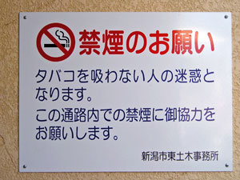
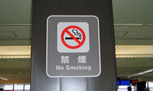
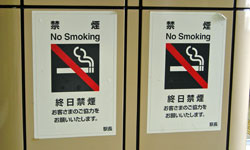
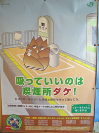

禁煙・分煙
公共スペースの禁煙化

タバコが大好きな人たちにはつらいことかもしれませんが、現在は「禁煙」が世界的な流れです。特に、先進国の多くでは、公共スペース（道路、駅、学校、オフィス、ショッピングセンター、レストラン、バーなど、タバコを吸わない人がいる可能性のあるすべての場所）の禁煙化が進められているといわれます。
日本は、多くの人から、社会の禁煙化がもっとも遅れた先進国だといわれてきました。しかし、近年では、日本も世界の流れにならい、社会の禁煙化に向けたとりくみがはじめています。


分煙

日本では、タバコを吸う人（喫煙者）の権利も尊重されています。そのため、全面的な禁煙だけでなく、喫煙スペース（タバコを吸ってもよい場所）と禁煙スペース（タバコを吸ってはいけない場所）を分ける「分煙」と呼ばれる取り組みが広く行なわれています。
「分煙」の基本は、『灰皿が設置されていない場所ではタバコを吸わない』ということです。『禁煙』という表示がなくても、灰皿のない場所ではタバコを吸わないようにしなければいけません。
喫煙ルーム・喫煙所
たとえば、JRの駅では、ホーム（プラットフォーム）を含めて、終日禁煙になっているところが多いです。
駅のホームは禁煙ですが、タバコがまったく吸えないわけではありません。駅のホームには、喫煙ルームや喫煙所が設置されています。